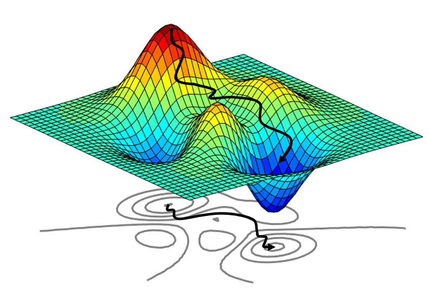
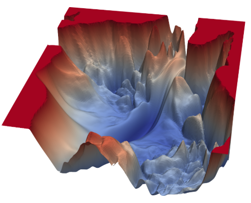
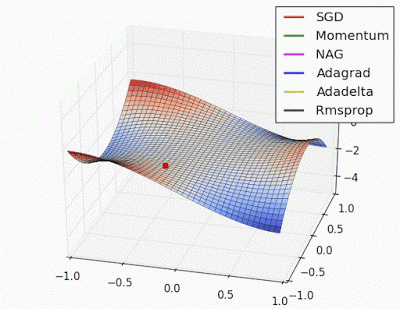

Численные методы
Вопросы по численным методам.
Перед вопросами
Видео, которые помогут разобраться в математике для ML
Посмотрите их целиком или возвращайтесь к нужным темам, когда встречаете незнакомое понятие в вопросах ниже.
-
 Математика для ML: теория вероятностей, математическая
статистика и оптимизация ↗
Разбор трёх разделов, без которых не обойтись ML-инженеру:
теорвер, матстат и оптимизация — что именно спрашивают и зачем
это нужно на практике.
Математика для ML: теория вероятностей, математическая
статистика и оптимизация ↗
Разбор трёх разделов, без которых не обойтись ML-инженеру:
теорвер, матстат и оптимизация — что именно спрашивают и зачем
это нужно на практике.
-
 Популярные вопросы по математике для ML и DS ↗
Линейная алгебра, матанализ, векторы и матрицы, нормы,
косинусная близость, ранг, базис, производная, градиент и
экстремумы, аппроксимация, интерполяция и экстраполяция.
Популярные вопросы по математике для ML и DS ↗
Линейная алгебра, матанализ, векторы и матрицы, нормы,
косинусная близость, ранг, базис, производная, градиент и
экстремумы, аппроксимация, интерполяция и экстраполяция.
-
Постановка задачи оптимизации
Во многих задачах машинного обучения, статистики и прикладной математики требуется найти такие параметры $\theta$, которые минимизируют (или максимизируют) некоторую целевую функцию. Это называется задачей оптимизации. Мы рассматриваем задачу
$$\min_{\theta \in \mathbb{R}^n} \; L(\theta) \quad \text{или} \quad \max_{\theta \in \mathbb{R}^n} \; L(\theta)$$
где:
- $\theta$ — вектор параметров модели (например, коэффициенты линейной регрессии),
- $L(\theta)$ — функция потерь (или логарифм правдоподобия, об этом позже), которую хотим минимизировать (или максимизировать).
Цель — найти такие параметры $\hat{\theta}$, при которых значение функции $L(\theta)$ достигает экстремума:
$$\hat{\theta} = \arg\min_{\theta} L(\theta) \quad \text{или} \quad \hat{\theta} = \arg\max_{\theta} L(\theta)$$
Формула выше означает, что $\hat{\theta}$ — это такой набор параметров нашей обучаемой модели, при котором функционал качества $L(\theta)$ достигает своего оптимального значения.
Оператор $\arg\min$ ("аргминимум") возвращает не само минимальное значение функции, а точку, в которой оно достигается. Например:
$$\arg\min_{x} (x-3)^2 = 3 \quad \text{(а не 0)}$$
Способы нахождения оптимальных параметров зависят от свойств функции $L(\theta)$: её гладкости, выпуклости, размерности и наличия аналитического выражения. Ниже рассмотрим три распространённых подхода.
Интуиция: мы ищем "дно" поверхности $L(\theta)$. Для простых функций (выпуклых, гладких) это дно единственно и найти его легко. Для сложных ландшафтов (нейросети с миллиардами параметров) — задача намного сложнее, и гарантий глобального минимума нет.
Что такое задача оптимизации в ML?
Задача нахождения таких параметров $\theta$, которые минимизируют (или максимизируют) целевую функцию: $\hat{\theta} = \arg\min_\theta L(\theta)$.
Что возвращает оператор $\arg\min$ и чем он отличается от $\min$?
$\arg\min_\theta L(\theta)$ возвращает точку $\hat{\theta}$, в которой $L$ достигает минимума, а не само минимальное значение. Например, $\arg\min_x (x-3)^2 = 3$, а $\min_x (x-3)^2 = 0$.
От каких свойств функции $L(\theta)$ зависит способ нахождения оптимальных параметров?
От гладкости, выпуклости, размерности и наличия аналитического выражения. Для выпуклых гладких функций минимум единственен и легко находится. Для сложных ландшафтов нейросетей гарантий глобального минимума нет.
Почему для нейросетей с миллиардами параметров задача оптимизации особенно сложна?
Пространство параметров имеет огромную размерность, ландшафт функции потерь содержит множество локальных минимумов и сёдловых точек, а вычисление градиента по всей выборке слишком дорого.
-
Градиентный спуск
Градиент — направление наискорейшего роста функции. Антиградиент — градиент с минусом, то есть направление наискорейшего уменьшения функции. Основная идея метода заключается в том, чтобы идти в направлении наискорейшего спуска, а это направление задаётся антиградиентом:
$$\theta^{(t+1)} = \theta^{(t)}-\eta \nabla L(\theta^{(t)})$$
За счет этого из заданной точки мы движемся в направлении наискорейшего убывания функции и попадем в конечном итоге в желаемый минимум (в идеале).

Визуализация градиентного спуска У нейросетей есть обучаемые параметры. В начале обучения они не оптимальны, и сеть сильно ошибается. Настроить эти параметры — значит найти такие, с которыми нейросеть будет иметь наивысшие метрики, будет умной и сможет решать нашу задачку. Как мерить, что сетка чему-то выучивается? На это указывает падение ошибки (лосс) и повышение метрик при обучении на train set и валидации на val set.
В формуле $\theta^{(t+1)} = \theta^{(t)}-\eta \nabla L(\theta^{(t)})$:
- $\theta^{(t)}$ — параметры модели на шаге $t$ (текущая позиция на ландшафте).
- $\nabla L(\theta^{(t)})$ — градиент функции потерь в этой точке (направление роста потерь).
- $\eta$ (эта) — learning rate (шаг обучения): насколько большой шаг делаем.
- Минус — двигаемся против градиента (в сторону убывания потерь).
Подбирать эти параметры (веса нейросети) руками невозможно, потому что в современных сетках их от нескольких миллионов до сотен миллиардов, поэтому используют градиентный спуск. Если коротко, мы итеративно спускаемся по поверхности нашей функции потерь (с помощью градиентного спуска) и на каждом градиентном шаге изменяем веса нейронной сети пропорционально посчитанному градиенту. По итогу придем в точку минимума функции потерь — таким образом, параметры будут настроены так, что ошибка нейросети минимальна, то есть мы решили задачу минимизации целевой функции, функционала качества (функции потерь).
Запишите формулу одного шага градиентного спуска и объясните каждый символ.
$\theta^{(t+1)} = \theta^{(t)} - \eta \nabla L(\theta^{(t)})$. Здесь $\theta^{(t)}$ — параметры на шаге $t$, $\nabla L(\theta^{(t)})$ — градиент функции потерь, $\eta$ — learning rate, минус — движение против градиента (в сторону убывания).
Почему в формуле стоит минус перед градиентом?
Градиент указывает в направлении наискорейшего роста функции. Чтобы минимизировать функцию потерь, нужно двигаться в противоположном направлении — в сторону антиградиента.
Что такое learning rate $\eta$ и почему важно его правильно подобрать?
$\eta$ — размер шага при обновлении параметров. Слишком большой $\eta$ приводит к перескакиванию через минимум, слишком маленький — к медленной сходимости или застреванию в локальном минимуме.
Почему для нейросетей невозможно подобрать параметры вручную?
Современные нейросети имеют от миллионов до сотен миллиардов параметров, подбор которых вручную физически нереализуем. Именно поэтому используют градиентный спуск, автоматически оптимизирующий все параметры одновременно.
-
Проблемы градиентного спуска
Нужно правильно подобрать $\eta$ — градиентный шаг. Если сделать его слишком большим, то шаги будут чересчур большими, можем перепрыгнуть через точку минимума; слишком маленьким — будет очень долго сходиться либо застрянем в локальном минимуме.
Обычно берут что-то вроде $\eta=10^{-3}$, но это тоже гиперпараметр, поэтому только практикой можно понять, какой $\eta$ подходит лучше всего в текущем сетапе — в конкретной задаче, с фиксированным лоссом и моделью ландшафт функции потерь будет свой.

Пример ландшафта функции потерь (приближенная визуализация). Видно, что поверхность рельефна, можно угодить в локальные минимумы. Размерность пространства, в котором находится функция потерь, совпадает с количеством параметров модели. Для современных сетей это миллионы и миллиарды измерений, что невозможно визуализировать. Данных обычно в выборке очень много (тысячи, миллионы, миллиарды), поэтому считать градиент по всем ним — слишком дорогое удовольствие. Применяются приближенные методы, стохастические и адаптивные, в которых шаг градиентного спуска производится после подсчета градиента на пакете (batch) данных (его размер — гиперпараметр) специальным образом. Жертвуем точностью каждого градиентного шага, зато во много раз ускоряем эти итерации.
Методы борьбы с локальными минимумами
- Стохастический градиентный спуск (SGD)
Вместо вычисления градиента по всей выборке — градиент по случайному подмножеству данных (мини-батчу) или даже по одному примеру. Такой шум в градиенте помогает "вырываться" из локальных минимумов, поскольку обновления параметров становятся более случайными и могут преодолевать мелкие впадины.
- Моментум (Momentum) и Nesterov Momentum
Эти методы учитывают накопленное направление предыдущих шагов, что позволяет "проскальзывать" через локальные минимумы и ускоряет сходимость. Nesterov Momentum дополнительно вычисляет градиент в предсказанной позиции, улучшая точность обновлений.
- Адаптивные методы оптимизации (AdaGrad, RMSprop, Adam, etc.)
Автоматически регулируют размер шага для каждого параметра, что помогает избегать застревания и улучшает сходимость на сложных ландшафтах функций потерь.

Приближенные варианты градиентного спуска - Инициализация параметров
Хорошая стартовая точка может помочь избежать попадания в нежелательные локальные минимумы.
- Регуляризация и добавление шума
Методы регуляризации ($L_1, L_2$) и добавление шума в параметры или градиенты (например, dropout, шум в градиенте) способствуют выходу из локальных минимумов и повышают обобщающую способность модели.
- Использование методов второго порядка
Учитывая кривизну функции (гессиан), можно точнее направлять шаги оптимизации, что снижает вероятность застревания, однако такие методы более вычислительно затратны. Иногда используют квазиньютоновские методы (квази-второго порядка).
Какие две крайности возникают при неправильном выборе learning rate $\eta$?
Слишком большой $\eta$ — перескакивание через минимум, расходимость. Слишком маленький $\eta$ — очень медленная сходимость или застревание в локальном минимуме.
Что такое стохастический градиентный спуск (SGD) и как он помогает с локальными минимумами?
SGD вычисляет градиент по случайному мини-батчу, а не по всей выборке. Случайный шум в градиенте помогает "вырываться" из мелких локальных минимумов и ускоряет итерации.
В чём преимущество адаптивных методов оптимизации (Adam, RMSprop, AdaGrad)?
Они автоматически регулируют размер шага для каждого параметра, что улучшает сходимость на сложных ландшафтах и помогает избежать застревания.
Почему считать градиент по всей выборке обычно неэффективно?
При миллионах или миллиардах объектов в выборке вычисление полного градиента на каждом шаге слишком дорого. Приближённые методы (мини-батч SGD) жертвуют точностью шага, но во много раз ускоряют обучение.
-
Принцип максимума правдоподобия
Принцип максимума правдоподобия (MLE, Maximum Likelihood Estimation) — это метод, пришедший из теорвера. Его идея — в оценивании параметров модели, максимизируя правдоподобие наблюдаемых данных.
Правдоподобие (likelihood function) — это вероятность получить наблюдаемую выборку при конкретном значении параметра.
Оценка максимального правдоподобия — значение параметра, которое максимизирует правдоподобие.
Интуиция в том, что существует некая генеральная совокупность, из которой к нам в руки попала некоторая выборка. Мы хотим понять, каким образом устроена генеральная совокупность. Для этого мы делаем предположение, что выборка, которая к нам пришла, соответствует определенной модели. В простейшем случае, мы можем сформулировать предположение так: выборка к нам пришла из распределения с плотностью $f(x | \theta)$. Параметр $\theta$ является константой, мы его не знаем и пытаемся оценить по выборке.
Слева: выборка (точки на оси) и гауссиана с параметром $\mu$; розовые отрезки — плотности $p(x_i \mid \mu)$, их произведение и есть правдоподобие $L(\mu)$. Справа: $\log L(\mu)$ при движении $\mu$. Максимум достигается ровно в выборочном среднем $\hat\mu = \bar x$ — это и есть оценка максимального правдоподобия. Как математически задать функцию правдоподобия?
- Дискретный случай: $$L(\theta) = \mathbb{P}(x_1, ..., x_n | \theta)$$
- Непрерывный случай: $$L(\theta) = f(x_1, ..., x_n | \theta)$$
Если наблюдаемые величины $x_i$ независимы, тогда функцию плотности распределения можно разбить на отдельные множители:
$$L(\theta) = f(x_1 | \theta) \cdot ... \cdot f(x_n | \theta) = \prod_{i=1}^nf(x_i | \theta)$$
Мы разбили функцию многомерного распределения в произведение одномерных (маргинальных) плотностей распределения. Это ключевой момент, который используется, например, в наивном байесовском классификаторе: это позволяет нам свести $n$-мерную задачу к последовательности одномерных задачек, которые намного проще решать.
Ключевой задачей является максимизация правдоподобия:
$$L(\theta) = \prod_{i=1}^nf(x_i | \theta) \to \max_{\theta}$$
или
$$\hat\theta^{MLE}=\arg\max_\theta L(\theta)$$
Перед нами — некоторая функция, и нам нужно найти, при каких параметрах она достигает своего максимума. Попахивает задачей поиска экстремальных значений, а это значит, что нам нужно считать производные и приравнивать их к нулю — все как при поиске экстремумов, которые мы рассматривали в мат. анализе.
Считать производную от произведения функций — сложно, поэтому давайте упростим задачу и воспользуемся свойствами логарифма и производных, перейдя тем самым от произведения к сумме:
$$\ln L(\theta) = \ln \left( \prod_{i=1}^n f(x_i | \theta)\right) =\sum_{i=1}^n \ln{f(x_i | \theta)}$$
Тогда
$$\frac{\partial \ln{L}}{\partial \theta}=\sum_{i=1}^n\frac{\partial \ln{f(x_i | \theta)}}{\partial\theta} = 0$$
Отсюда и находим $\theta$.
Стоит отметить, что задача принципа максимума правдоподобия эквивалентна задаче поиска минимума эмпирического риска. Почему так? Пусть $X^{\ell} = (x_i, y_i)_{i=1}^{\ell} \sim p(x, y|w)$. Пусть это выборка $X^{\ell}$ независимых одинаково распределенных объектов (i.i.d.). Пусть $\mathcal{L}$ — функция потерь. Тогда:
Максимизация правдоподобия: $$L(w; X^{\ell}) = \ln \prod_{i=1}^{\ell} p({x_i, y_i}|w) = \sum_{i=1}^{\ell} \textcolor{red}{\ln \underbrace{p(x_i, y_i|w)}_{\text{совместн. распред.}}} \;\; \to\; \max_{w}.$$
Минимизация аппроксимированного эмпирического риска: $$\widetilde{Q}(w; X^{\ell}) = \sum_{i=1}^{\ell} \textcolor{orange}{\overbrace{\mathcal{L}(y_i; \underbrace{f(x_i, w)}_{\text{предсказание}})}^{\text{ошибка на объекте } x_i}} \;\; \to\; \min_{w}.$$
Эти два принципа эквивалентны, если положить: $$- \textcolor{red}{\ln \underbrace{p(x_i, y_i|w)}_{\text{совместн. распред.}}} = \textcolor{orange}{\mathcal{L}(y_i; \underbrace{f(x_i, w)}_{\text{предсказание}})}.$$
$$\boxed{\text{порождающая модель } p \quad \Longleftrightarrow \quad \text{разделяющая модель } f \text{ и } \mathcal{L}}$$
Что такое принцип максимума правдоподобия (MLE)?
Метод оценки параметров модели путём максимизации функции правдоподобия — вероятности получить наблюдаемую выборку при данных параметрах: $\hat{\theta}^{MLE} = \arg\max_\theta L(\theta)$.
Что такое функция правдоподобия и почему при независимых наблюдениях она записывается как произведение?
$L(\theta) = \prod_{i=1}^n f(x_i|\theta)$. При независимости наблюдений совместная плотность разбивается на произведение маргинальных — это позволяет свести $n$-мерную задачу к $n$ одномерным.
Зачем при MLE переходят к логарифму правдоподобия?
Логарифм превращает произведение в сумму: $\ln L(\theta) = \sum_{i=1}^n \ln f(x_i|\theta)$. С суммой проще дифференцировать, а максимум сохраняется (логарифм — монотонная функция).
В чём эквивалентность задачи MLE и минимизации эмпирического риска?
Если положить $-\ln p(x_i, y_i|w) = \mathcal{L}(y_i; f(x_i, w))$, то максимизация правдоподобия совпадает с минимизацией суммарной функции потерь. Это показывает, что обучение нейросетей со многими функциями потерь статистически обосновано через MLE.